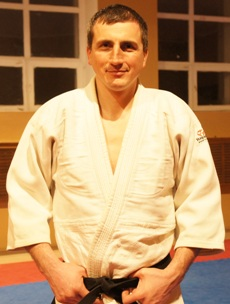

Gorbokon Igor Petrovich
EDUCATION
- High school of Olympic reserve.
- Kiev National University of Physical Education and Sports.
- Kyiv National Trade and Economic University.
- Yaroslav the Wise National Law Academy.
WORK EXPERIENCE
1992 to 2001 - Member of the professional Ukrainian Judo Team,
2001-2004 - Member of the professional Ukrainian Sambo Team,
2005-2008 - Club "Usin"- judo trainer and instructor,
2008-to date - the National Agricultural University, judo coach.
RANKS
- Master of Sport Internetional Class in Judo,
- Master of Sport Internetional Class in Sambo,
- In 2003, The Ukrainian Judo Federation awarded 3 (Third) Dan in Judo .
ACHIEVEMENTS
- 2nd prize of the World University Judo Championship ,
- 2nd prize at the World Sambo Championship,
- 4-time winner of European Sambo Championship,
- 11-times Champion of Ukraine in Judo,
- 7-times Champion of Ukraine in Sambo.
Multiple winner of international tournaments in judo and sambo.
MY COACHES
- Honored coach of Russia Galkin S.E.,
- Honored coach of Ukraine Kalinskiy A.N.,
- Coach of the Highest category Chesebiev B.M
Additional information on international competitions and tournaments in
judo from the site
www.judoinside.com:
Igor Gorbokon
Results
Date |
Result |
Event |
Type |
WClass |
09-Mar-2001 |
5 |
|
WCup |
U100 |
12-Jul-1999 |
2 |
|
WUC |
U100 |
15-Mar-1998 |
7 |
|
WCup |
U100 |
08-Mar-1998 |
7 |
|
WCup |
U100 |
28-Feb-1998 |
3 |
|
WCup |
U100 |
08-Dec-1996 |
1 |
|
WCup |
U95 |
15-Jun-1995 |
2 |
|
IT |
U95 |
22-May-1994 |
7 |
|
ECh |
U95 |